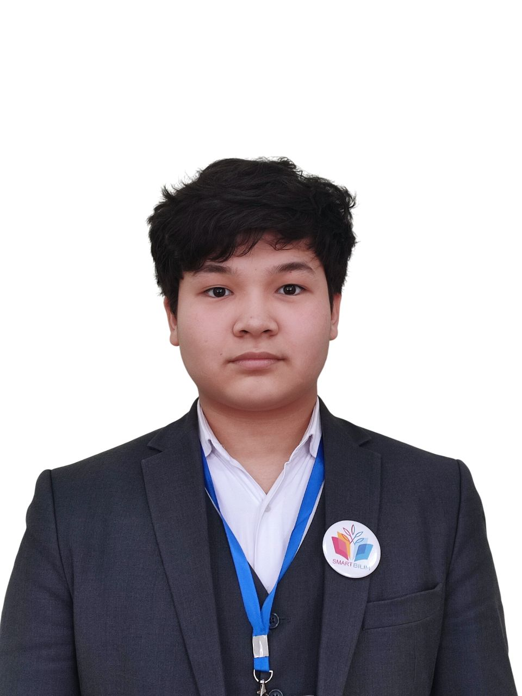

Eraly Gainulla 
ML/DL DeveloperStudent at Smart Bilim school Aktobe, Kazakhstan

|  |
Eraly Gainulla
ML/DL Developer |
I am an ML/DL Developer specializing in computer vision and natural language processing.
I am currently a student at Smart Bilim Aktobe in Kazakhstan, continuously exploring new approaches in ML.
Last modified: Mar 10 2025